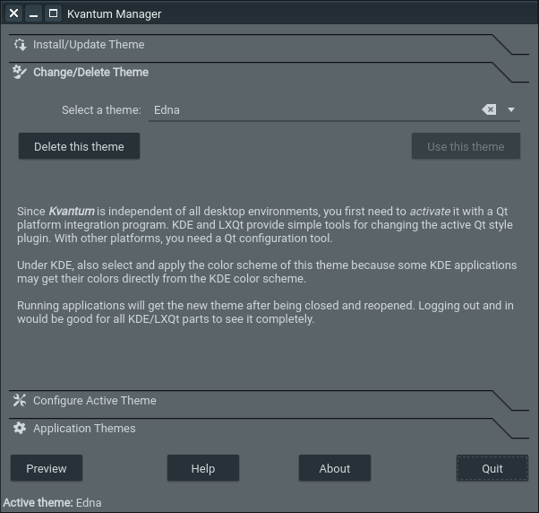
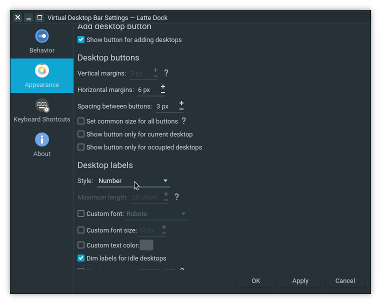
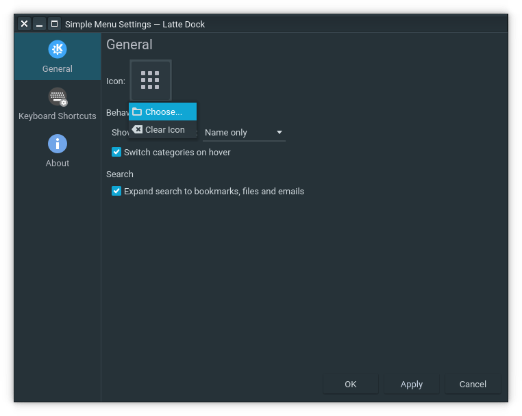

Initial Setup
Open System Settings in the Start Menu.
Window Management > Windows Behavior > Advanced
Workspace Behavior > Desktop Effects
Workspace Behavior > Screen Edges
Window Management > Task Switcher
Window Management > Kwin Scripts
Force Blur, Latte Windows Colors * Install from this window (Get New Scripts...)
Application Style > Window Decorations > Titlebar Buttons
Workspace Behavior > Virtual Desktops
Install Global Theme and GTK2/GTK3 Themes
Global Theme * Install from this window (Get New Global Themes...) or download from the resources section instead
Qogir-Theme * Download from the resources section instead
cd ~/Downloads
git clone https://github.com/vinceliuice/Qogir-theme.git
cd Qogir-theme
./install.sh
Application Style > Application Style
Install Icon, Cursor, and Font
Icons * Install from this window (Get New Icons...) or download from the resources section instead
cd ~/Downloads
git clone https://github.com/vinceliuice/Tela-circle-icon-theme.git
cd Tela-circle-icon-theme
./install.sh
Cursors * Install from this window (Get New Cursors...) or download from the resources section instead
Fonts * Download from the resources section instead
https://fonts.google.com/specimen/Roboto
Dolphin
/home/<nama_user>/.local/share/fonts/
Fonts > Adjust All Fonts...
Install and Configure Kvantum Theme
* See the resources section for other distributions
Ubuntu and Derivatives
sudo add-apt-repository ppa:papirus/papirus
sudo apt-get update
sudo apt install qt5-style-kvantum qt5-style-kvantum-themes
* To remove ppa repository, use command :
sudo add-apt-repository --remove ppa:<ppa_repository>
Arch and Derivatives
sudo pacman -S kvantum-qt5
Download Edna * Download from the resources section instead
https://www.pling.com/p/1367055
Kvantum Manager > Select a Kvantum theme folder > Install this theme
Kvantum Manager > Change/Delete Theme > Select a theme > Use this theme
Application Style > Application Style > kvantum-dark
Install Plasmoids Widget
Right click Desktop > Add Widgets... > Get New Widgets... > Download New Plasma Widgets * Install from this window
Latte Separator, Latte SideBar Button, Latte Spacer
Window Title Applet
Better Inline Clock
Simple Menu
Fancy Clock
virtual-desktop-bar * Download from the resources section instead
cd ~/Downloads
git clone https://github.com/wsdfhjxc/virtual-desktop-bar.git
cd virtual-desktop-bar
./scripts/install-dependencies-ubuntu.sh
./scripts/build-applet.sh
./scripts/install-applet.sh
Setup Latte-Dock and Add Plasmoids Widget
Install Latte-Dock * Download from the resources section instead
Arch and Derivatives
pamac build latte-dock-git
Ubuntu and Derivatives
cd ~/Downloads
git clone https://github.com/KDE/latte-dock.git
cd latte-dock
sudo apt install cmake extra-cmake-modules qtdeclarative5-dev libqt5x11extras5-dev libkf5iconthemes-dev libkf5plasma-dev libkf5windowsystem-dev libkf5declarative-dev libkf5xmlgui-dev libkf5activities-dev build-essential libxcb-util-dev libkf5wayland-dev git gettext libkf5archive-dev libkf5notifications-dev libxcb-util0-dev libsm-dev libkf5crash-dev libkf5newstuff-dev libxcb-shape0-dev libxcb-randr0-dev libx11-dev libx11-xcb-dev
sudo apt install kirigami2-dev
./install.sh
Edna Layout * Download from the resources section instead
https://www.pling.com/p/1417204
Settings - Latte Dock > Import...
Settings - Latte Dock > Switch
File Manager (Activate Show Hidden Files)
/home/<nama_user>/.local/share/plasma/plasmoids/
Edna.layout.latte (Replace org.kde.plasma.chiliclock with the word highlighted in the picture below)
/home/<nama_user>/.config/latte/
Right click latte-dock on the top side > Edit Dock... > Inline Clock

Right click latte-dock on the bottom side > Configure Virtual Desktop Bar...
Right click default panel (bottom side) > Edit Panel... > Remove Panel

Right click latte dock on the top side > Edit Dock... > Right click once again > Show Alternatives
Configure Simple Menu
Configure Window Title
Configure Better Inline Clock
Fancy Clock Widget
Install LG Weather_Z font * Download from the resources section

Simple Weather Widget
Right click Desktop > Add Widgets... > Get New Widgets... > Download New Plasma Widgets
* If an error occured, install plasma-widget-addons and perform restarting firstly
sudo apt install plasma-widgets-addons
Install Panon (Audio Spectrum Analyzer) * Download from the resources section instead
https://www.pling.com/p/1326546
Arch and Derivatives
sudo pacman -S qt5-websockets python-docopt python-numpy python-pillow python-pyaudio python-cffi python-websockets
Ubuntu and KDE neon
sudo apt-get install qml-module-qt-websockets python3-docopt python3-numpy python3-pyaudio python3-cffi python3-websockets
Widget Panon

Setup Login/Lock Screen
Startup and Shutdown > Login Screen (SDDM) * Install from this window or download from the resources section instead
Login Screen Background * Download from the resources section
Workspace Behavior > Screen Locking
Screen Locking Wallpaper * Download from the resources section
Additional Setup
Ulauncher * Download from the resources section instead
Arch and Derivatives
pamac build ulauncher
Ubuntu and Derivatives
sudo apt-add-repository ppa:agornostal/ulauncher
cd ~/Downloads
sudo apt install ./ulauncher_5.10.0_all.deb
Konsole
Settings > Configure Konsole...
Konsole Color Schme & Font * Install from this window or download from the resources section instead
After the configuration has finished, restarting Konsole
Mozilla Firefox
Menu > Preferences > Home
Menu > Customize...